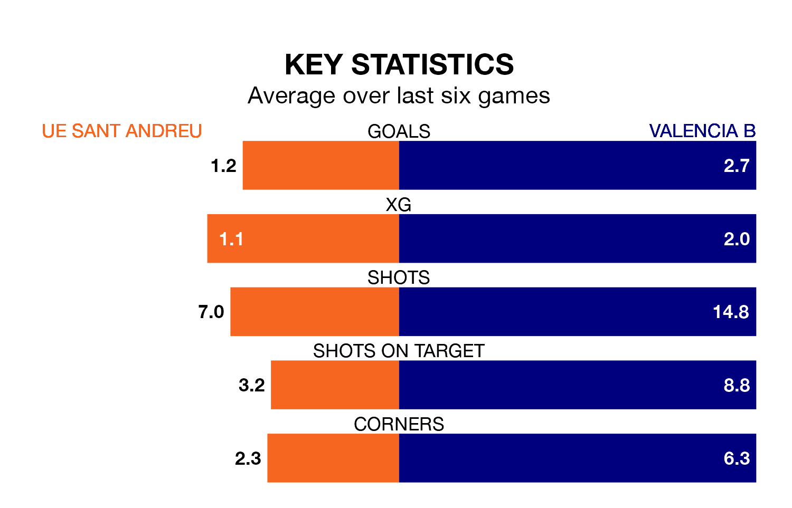

Sunday's early match between UE Sant Andreu and Valencia B promises to be one for the neutrals, as two of the Segunda División RFEF Group 3's most free-scoring sides go head-to-head.
Ahead of the game at Camp Municipal Narcís Sala, UE Sant Andreu and Valencia B sit second and fourth in the goal-scoring charts, with 50 and 45 goals respectively.
Alexis García Gallego and Ernest Forgas Pallares lead the way for the home side, having bagged five goals each in their 32 games to date.
And Borja Calvo Montón and Marco Camús Muñoz have been the main men in the opponents' penalty box for Valencia B, with five goals each.
UE Sant Andreu are fifth in the table after 32 games, of which they have won 15 and drawn nine, earning 54 points.
Valencia B are six places behind the home team in 11th, with 11 wins and eight draws putting them on 41 points.
UE Sant Andreu are in mixed form in the Segunda División RFEF Group 3, with two wins and three draws from their last six games.
With three wins and a draw over that period, the visitors' form is slightly better – they have taken 10 points from 18, compared to UE Sant Andreu's nine.
UE Sant Andreu's last match was on Sunday, a 0-0 draw against Torrent.
Valencia B lost 2-1 against UD Alzira last time out, on April 20, with on the scoresheet.
Updated: 07:59 (UTC), 26/04/24